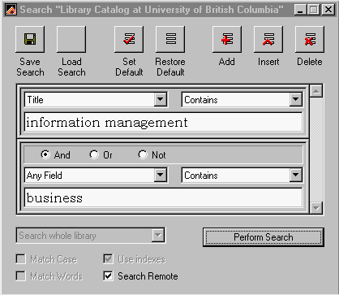

EndNote 4.0. Berkeley, CA: ISI ResearchSoft, © 2000. CD-ROM, Manual (Endnote 4:...bibliographies made easy.) xvi, 445pp. Price $209.95 by the Web; $269.95 by mail (Volume discounts available.) [Available in the UK from Adept Scientific plc., 6 Business Centre, West Avenue One, Letchworth, Herts, SG6 2HB and from re-sellers world wide.]Reviews of Version 3.0 and Version 2.5 of EndNote are available at this site, so we shall focus on the significant changes that have taken place in this latest version. I might add that, since Version 3.0 was reviewed here, the University of Sheffield has taken a site-licence for the software and it is now used throughout the institution - and I think we can claim that we had some influence on that decision. Installation of the new program takes place smoothly, with your old EndNote 'libraries' (reference files) maintained. You are recommended to uninstall older versions first, particularly if you have custom styles or connection files - these will not, otherwise, be maintained. I had no such files so I simply installed it 'on top of' EndNote 3.0 and had no problems. The interface that pops up when you launch the program has a familiar look, but there are changes. [Click here to see the new interface.] The main change is that preview window at the bottom - a very useful feature that lets you know immediately whether the reference is going to be printed in the bibliography the way a journal editor wants it. In the example, the format is the EndNote standard 'author/date' reference, slightly amended by me to fit my preferences (e.g., a colon after place of publication, rather than a comma). And it is easy to change the standard templates for output files: click on File, then on Output Styles, and you will find Edit "Author/Date" (or Edit "Numbered" if you have chosen that style as your default. This takes you to the style-editing window, where you can click on Templates under Bibliography when you will be presented with the editable frame for the style. You can now set about customising it to your heart's content. There are plenty of styles to edit! Five hundred and thirty-five in the Style Manager, including those of numerous journals, the AIP style manual, the MLA styles and so on - but nothing for journals in the information science, information management, librarianship fields - no JASIS, JDoc, Library Quarterly, Int J of Information Management, Journal of Information Science, etc. - not even Information Research! Surely a sad lack with all those Ph.D. students and faculty out there beavering away to produce papers for these journals. Perhaps this review will help to get the omission rectified. The major change in version 3.0 was that EndNote was given the ability to interact directly with information sources that implement the Z39.50 information retrieval protocol, allowing the result of a search to be downloaded directly into an EndNote database. EndNote uses connection files, which give the information needed by the protocol to make the connection. This version provides more than 200 such files allowing the user to connect to, search, and retrieve references from as many online library cataloguess and bibliographic databases. The Web site has updates to the list of connection files. A freely accessible set of demonstration databases (ABI-Inform Demo, CINAHL Demo, Core Biomedical Demo, Current Contents Demo, Medline Practice Files, PsycINFO Demo)is available from Ovid Technologies, Inc., these provide an easy means of gaining some familiarity with the processes involved. Thus, the connection file for the Hong Kong Polytechnic University library cataloge has the following structure (if my interpretation of the file is correct!):
For commercial databases user IDs and passwords are needed. Once you have a connection file, the process of downloading is simple: once on the Internet, you simply click on Connect… on the File menu, select the appropriate connection file, and click on the file name. When the connection is made, you are presented with a search screen which, as you can see from the screen shot, allows you a degree of Boolean combinations and the ability to specify the part of the record in which the terms should appear. Thus, searching the library catalogue at the University of British Columbia for "information management", and "business" in the Title field produced the 11 records shown here, which were then transferred to a new EndNote bibliography file. The fields in the original record are automatically assigned to the appropriate EndNote field for the document type. As a result, you may get more information than you normally record in your bibliography, but it is a straightforward matter to cut out unwanted data from the record. The amount of editing that records need after transfer to EndNote depends the fields in the original source and their contents. I noted in my review of Version 3.0 that records downloaded from the Library of Congress catalogue often have curious combinations of elements in the Author field; for example: Dyos, H. J. Presumably this is because the Library of Congress treats the bodies listed as secondary authors of the texts. Again, as in the last version, EndNote is dependent upon the source for the correct representation of document types. Taking the same example from the Library of Congress catalogue as on the previous occasion, a conference proceedings is not recognized and, instead, the ordinary Book style is used for the description: Cities in the west : papers of the Western Canada Urban History Conference, University of Winnipeg, October 1974 With the result that the editors are listed as authors, along with the University of Winnipeg. This, of course, is not a fault of EndNote, which can only recognise document types as they are defined within the system, but it does mean that you may be involved in some editing of a file to ensure that documents are presented in the correct style for a publication. The ability to export a file as HTML is particularly useful in this age of 'digital libraries', and the feature works very smoothly. The HTML output is very simple: it consists of a single block of text, with line breaks (<BR>) to separate the items. You will find an example of an output file, taken from a search of the Library of Congress catalogue, here: I carried out minimal editing, simply placing the output within a table to provide more white space on the screen, and adding a title. This bibliography was prepared, literally, in minutes and it would have been possible to make it more extensive by searching other library catalogues and indexes. True, it lacks any editing and selection but, as a place to begin it beats the file of catalogue cards hands down! Of course, any EndNote 'library' you create is searchable and the search capabilities have been enhanced in this version to offer:
Perhaps the most welcome new feature, at least for humanities scholars, is the improved way of dealing with repeated references in footnotes - the style favoured by most humanities journals. Thus, when a second reference to the same work is made in a footnote, without an intervening reference to a different item, 'Ibid.' is used and, if desired, volume and page numbers may be added. Where another item separates a second reference, it is possible to provide a shortened form of the author and title. The complete list of changes in this version is given here for the EndNote aficionados. EndNote 4.0 no longer works with Windows 3.1 or OS/2 but needs Windows 95, 98, 2000 or NT4 or later. You'll need a 486 or better processor and a minimum of 16 Mb of RAM and 11 Mb of hard disc space - exactly twice the necessary space of version 3.0. Of course, you also need a CD-ROM drive for installing. There is a Mac version as a separate product. For help with using EndNote there is, of course, technical support available, but much can be gained from the mailing list, where people exchange information freely on how to make best use, and even novel use of the package. Over all, the changes in this version of EndNote are well worth the upgrade price. Professor Tom Wilson |
){kind=link}
){kind=link}
){kind=link}